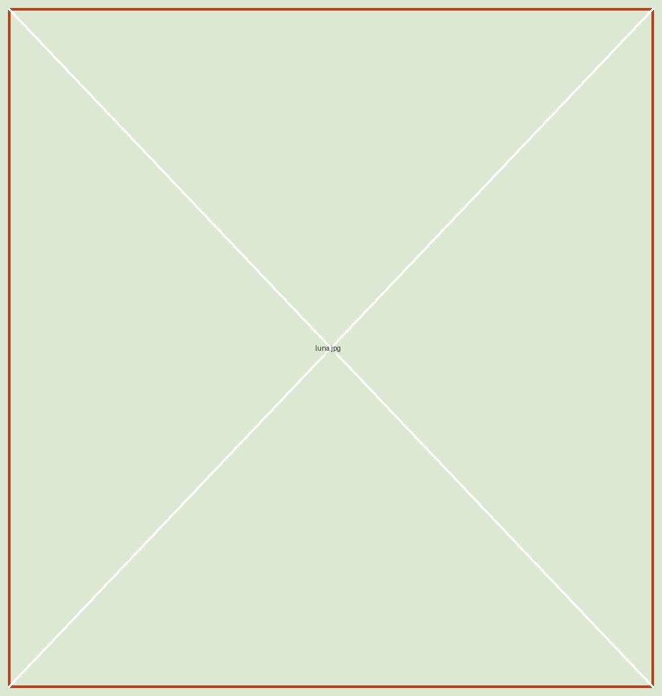

← Volver al catálogo

Disponible para adopciónPERRA · MESTIZA
Hola, soy Luna.
Experta en paseos tranquilos, miradas tiernas y siestas cerca de ti.
Edad2 años
SexoHembra
TamañoMediana
RazaMestiza
- Tranquila
- Sociable con perros
- Cariñosa a su tiempo
La solicitud no es un compromiso. Es el primer paso para conocernos y resolver tus dudas.
MÁS ALLÁ DE UNA FOTO
La historia de Luna
Luna llegó al refugio algo tímida, pero con muchas ganas de confiar. Con paciencia, rutinas suaves y paseos al aire libre, empezó a enseñarnos su lado más curioso y cariñoso.
Le encanta olfatear cada rincón del jardín y buscar una mano amiga al terminar el día. Ahora busca una familia que entienda que los mejores vínculos se construyen sin prisas.
Cuidada por dentro y por fuera
- Vacunas al día
- Desparasitación al día
- Esterilizada
- Revisión veterinaria favorable
Su hogar ideal
Una familia con tiempo para pasear, paciencia para acompañarla y un espacio tranquilo para descansar.
¿Y si su próximo hogar es el tuyo?
Cuéntanos sobre ti. Te acompañamos en cada paso de la adopción.
OTRAS HUELLAS, OTRAS HISTORIAS